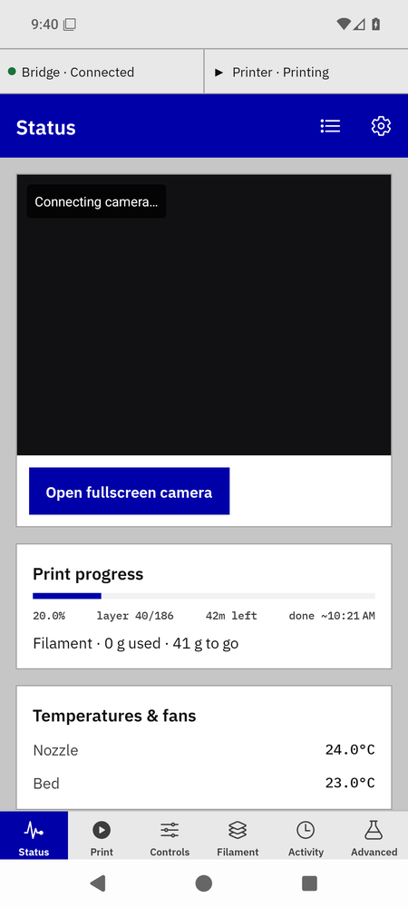
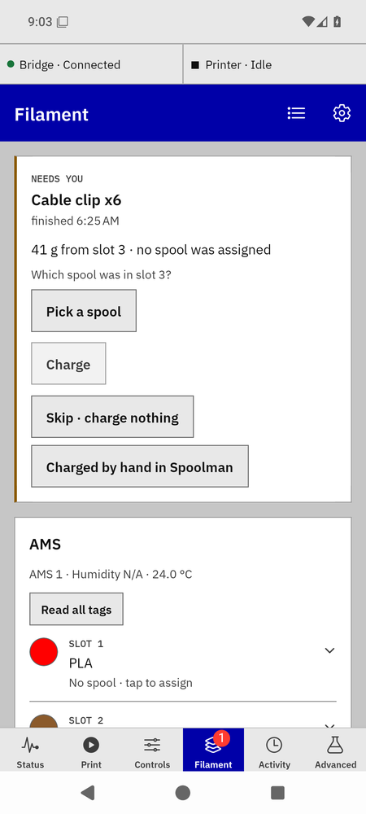
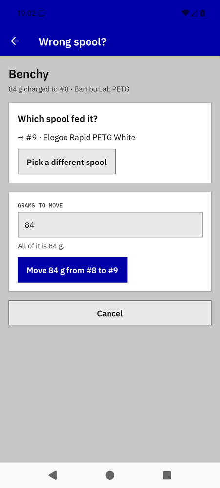
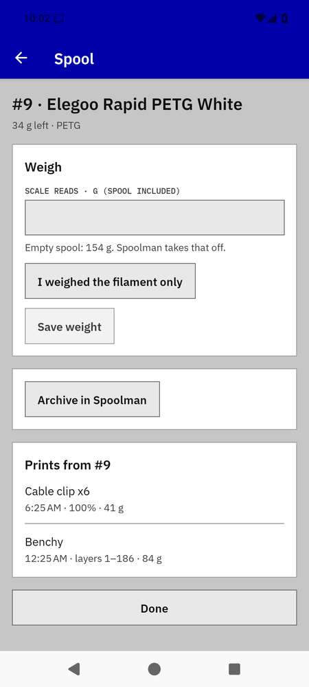

Printing and charges
The bridge reads the print file's grams per layer and charges the spool in each feeding slot in Spoolman as the print goes: it reads the spool, writes the difference, reads again to confirm. When the print ends it settles the last grams. Most prints need nothing from you; the ones that do become a card.
While a print runs

Status while printing.
The Print progress card on Status shows percent, layer, time left and the filament line: "Filament · 23 g used · 60 g to go". A print feeding from more than one slot gets a line per slot, and a slot with no spool assigned shows in the warning colour. "Sent to Spoolman: 19 g" under it is what has already been written. Figures are whole grams in the app; the bridge writes to the hundredth.
Prints the bridge didn't start (Orca, the printer's screen) are adopted when the bridge sees them running and charged the same way.
When it ends
Nothing to tap. Activity gets a line ("Charged 84 g to #9 …"), the slot row's grams drop, and Recent prints on the Filament tab lists the print: "Benchy · finished 14:35 · 84 g → #8".
Needs you: a print with grams nowhere to go

The card.
A card appears at the top of the Filament tab, and the tab's badge counts them, when a finished print has grams the bridge could not place:
- "41 g from slot 3 · no spool was assigned" — the slot had no spool when it fed the print.
- "12 g short · #5 ran out in Spoolman" — Spoolman's figure for the spool hit zero before the count did.
- "40 g for #5 · archived in Spoolman" / "#5 isn't in Spoolman any more" — the spool was archived or deleted mid-print.
- "40 g for #5 · Spoolman didn't answer" — Spoolman was unreachable past the bridge's retry budget (six hours).
- "A filament the file gave no weight for" — the slicer wrote no weight; you type the grams.
- Tap Pick a spool; spools of the slot's material come first. The part's picture shows on the card when the bridge has the print file.
- Check the grams (whole numbers; the counted figure is filled in) and the switch Keep #9 in slot 3, on by default, which assigns the spool to the slot for next time.
- Tap Charge 41 g to #9. Or Skip · charge nothing, or Charged by hand in Spoolman if you already did it there.
Refusals show the bridge's words on the card and the card stays: "Spoolman didn't answer; try again", "#9 is archived in Spoolman", "#9 ran out in Spoolman".
Wrong spool?

Moving a print's grams.
- On the Filament tab, under Recent prints, tap Wrong spool? on the print (one button per charged spool when a print used several).
- Pick the spool that really fed it; same material first.
- The grams default to all of it; lower the number for a partial move. Tap Move 84 g from #8 to #9.
The bridge credits the first spool and charges the second, and moves the print's history with the grams. If Spoolman answers only the credit, the toast says so and tapping Move again sends just the charge. A move that would push a spool's used weight below zero (someone edited it in Spoolman) is refused with the bridge's words.
A spool's prints

History on the spool sheet.
Open a spool (row → Weigh or archive). Prints from #8 lists what it fed, newest first: "Benchy · layers 41–186 · 77% · 12 g". A print that stopped early reads "layers 1–6 of 10". A print a refill split between two slots reads, in Recent prints, "layers 1–40 from #11 · 41–186 from #12".
Runout and refill mid-print
With a refill backup set, the printer switches slots on its own when the first runs out. The bridge counts the layers before the switch against the first slot's spool and the layers after against the second's; the switch layer belongs to both. The totals still equal the file's planned grams. When the printer's own refill notice is missing, the bridge infers the switch from the feeding slot changing while auto-refill is on.
Bambu Bridge manual · for bridge 0.7.0b1 and app 0.21.0-beta.9. Independent community software, AGPL-3.0-only.